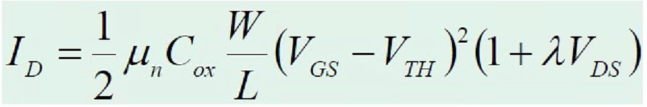

충남대학교 컴퓨터공학과 남병규 교수님의 "전자회로" 강의를 필기한 내용입니다.
이 문서는 보관이 목적이고, 관리되지 않습니다. 따라서 잘못된 정보가 포함되어 있거나 순서가 뒤죽박죽일 수 있습니다.
트랜지스터의 역할
- Amplify : 신호를 증폭시켜줌
- Switch : 신호를 끄고 킬 수 있음
- 트랜지스터만 증폭기능이 있기 때문에 active element(능동소자) 라고 한다
트랜지스터의 종류
- Bipolar Junction Transistor(BJT) - 실리콘과 게이트를 직접 연결 - 옛날유물
- MOSFET - 실리콘과 게이트를 절연체를 두고 연결 - 싸고 집적하기 좋아 현재 사용하는 트랜지스터
MOSFET

- P타입에 절연체(insulator) 를 통해 전극이 붙어있는 형태를 갖는 것이 제일 큰 특징이다
- 이런 절연막을 통한 전극구조를 MOS라고 부른다
- 위 그림에서 게이트와 P타입 사이에 있는 저놈이 절연체임
- 이런 절연막을 통해 얻어낼 수 있는 것은 이 절연막으로 인해 캐패시터적인 특성을 얻게 된다 - 전극|절연체|P타입 이렇게 연결되므로
- 이러한 구조를 MOSCAP이라고 부르고 여기의 P양쪽에 N을 붙이면 이게 MOSFET 이 된다
- 소스랑 드레인은 구조적으로 구분되어 있는게 아니고 전압을 어디에 걸어주느냐에 따라 결정된다
- Body에는 Gate 와 반대의 전압을 걸어줘야 PN접합부에 역방향이 걸려 Body로 전류가 빠져나가지 않고 드레인으로 가게 된다
N, PMOS
- NMOS : 양쪽에 N 타입을 도핑한 것
- 순방향일때 전자가 끌려와서 전류가 흐르는 구조 - 양쪽에 N타입이 있으므로 길이 열리려면 전자가 끌려와야됨
- 가운데에 양극을 걸어줘야 전류가 흐른다
- 소스에서 전자가 공급되어야 하므로 소스가 드레인보다 전압이 낮다(실제로는 전자는 음극에서 양극으로 흐르므로 소스에 전자가 공급되려면 소스에 음극을 걸어줘야 전자가 공급된다) - 따라서 드레인 → 소스로 전류가 흐르게 된다
- NMOS는 양쪽에 N타입을 도핑했고, 양쪽의 N타입을 연결해야되기 때문에 전자를 가지고 길을 열고, 전자를 끌여들여야 되기 때문에 게이트에 양극을 걸어줘야되고, 소스에서 전자를 공급받아야되기때문에 소스에 낮은전압을 걸어 드레인 → 소스로 전류가 흐른다로 기억할 것
- PMOS : 양쪽에 P타입을 도핑한 것
- 순향향일떄 정공이 끌려와서 전류가 흐르는 구조 - 양쪽에 P타입이 있으므로 길이 열리려면 정공이 끌려와야 됨
- 가운데에 음극을 걸어줘야 전류가 흐른다
- 소스에서 정공이 공급되어야 하므로 소스가 드레인보다 전압이 높다(정공은 양극에서 음극으로 흐르기 때문에 소스에 양극이 걸려야 한다) - 따라서 소스 → 드레인으로 전류가 흐르게 된다
- PMOS는 양쪽에 P를 도핑했고, 양쪽의 P를 연결해주기 위해 정공을 끌어와야 되고, 정공을 끌어오기 위해 게이트에 음극을 연결해야 되고, 소스로 정공을 공급해줘야되기때문에 소스에 높은전압을 걸어 소스 → 드레인으로 전류가 흐른다라고 기억할 것
CMOS
- NMOS와 PMOS모두 각각의 장단점이 있다 - 각각 효율적인 경우가 있고 아닌 경우가 있다 이거다
- 그래서 NMOS와 PMOS를 둘 다 적절히 섞어서 사용해 서로의 단점을 상쇄시키게 하는데 이걸 CMOS라고 한다 - NMOS와 PMOS를 둘 다 사용하는 것을 CMOS라 하는 거
NMOS 트랜지스터의 동작
- PMOS트랜지스터는 이와 반대로 동작한다고 생각하면 되겠쥬?
- Accumulation → Depletion → Inversion의 세 과정을 거쳐서 Channel(전선, 물길 등등으로 이해해라)이 생성된다 - 시험각

Accumulation
- Accumulation : 게이트에 음극을 연결하거나 아무 전극도 연결하지 않은 상태처음에는 아무 전극도 걸어주지 않았기 때문에 양쪽의 N타입 사이에는 정공이 많이 있게 된다(가운데에는 P타입 이므로)
Depletion
- Depletion : 게이트에 양극을건 직후의 단계그러다가 게이트에 양극을 걸어주면 정공들이 밀려나게 된다
Inversion
- Inversion : 게이트에 양극을 걸어 channel이 생긴 단계정공들이 물러나고 그 쪽에 전자가 몰리면서 P타입이지만 마치 N타입 인것마냥 작동한다 - 따라서 두 N타입 가운데에 N타입이 생긴 격이므로 전류가 흐르게 된다
문턱전압 - Threshold voltage
- V-oxide : MOS cap에 전압을 걸때는 가운데 절연층에 해당하는 전압보다 높은 전압을 걸어줘야 한다(1미터 물탱크에 물을 담을때에는 1미터보다 높이 올라가서 물을 부어야 되는것으로 이해하면 됨)
- V-depletion : 정공을 몰아내는데 필요한 전압
- V-inversion : 전자들을 끌어오는데 필요한 전압
- 이 세 전압을 더한 것이 V-threshold 이며 이 전압보다 큰 전압을 걸어줘야 가운데 channel이 생겨 소스와 드레인이 연결되게 된다
- 평균적으로 0.4볼트정도 된댄다
- 그리고 NMOS의 경우 소스는 전압이 낮아야되므로 게이트의 경우에는 소스보다는 전압이 높아야 된다
- 근데 이 소스와 게이트의 전압차이는 문턱전압보다 높아야 된다 - 낮으면 channel이 생기지 않으므로
- 따라서 Vgs를 게이트와 소스와의 전압차라고 하고 Vth를 문턱전압이라고 할때 전류가 흐르기 위해서는
Vgs = Vg - Vs > Vth여야 한다는 것- 즉, Vs보다 Vth만큼 큰 전압을 Vg에 걸어줘서 channel을 열고 Vg보다도 더 큰 전압을 Vd에 걸어주면 channel도 열리고 전압차도 존재하기 때문에 드레인 → 가운데 P타입의 상부 → 소스 이렇게 전류가 흐르게 되는 것
NMOS 트랜지스터에 흐르는 전류
구조적 특징에 따른 전류

- 소스와 드레인의 전압차에 의해 전류가 흐르므로 당연히 drift 전류가 흐른다
- L(length) : 소스와 드레인 사이의 거리(가로) - 전류가 흘러야되는 channel의 거리
- W(width) : 게이트의 크기(세로) - 전류가 흐르는 channel의 폭
- 당연히 거리에는 반비례하고 폭에는 비례해서 전류가 흐른다 -
Ids 비례 W / L- 전류는 NMOS에서는 드레인에서 소스로 흐르므로 ds로 표기한다 - 산화막의 두계에도 전류가 관련된다 - 산화막의 두께를 tox라고 하는데 이게 크면 P쪽에 전자가 모이는 것이 힘들어지므로 channel도 잘 안생기게 된다 -
Ids 반비례 tox- 얘도 결국에는 캐패시터의 역할이므로 Ids 비례 C(캐패시턴스) 라고도 말할 수 있다
- P타입 결정의 균일도에도 영향을 받는다 - 균일하게 결정이 배열되있으면 전자가 더 이동하기 쉬워 전류가 높아지고 균일하지 않으면 전자이동에 방해를 받아 전류가 낮아지게 된다 - 이때의 균일도는 Mobility - 뮤 로 표기한다 - 따라서
Ids 비례 뮤의 식이 성립한다
Vgs, Vds와 전류와의 관계를 각각 살펴보면
- 트랜지스터의 경우에는 다른 소자와는 다르게 전압을 걸어주는 곳이 두군데이다 - 게이트와 드레인
- 게이트 전압이 전류에 미치는 영향을 보면 게이트 전압 중 문턱전압은 소실되므로 이것을 뺀
Ids 비례 (Vgs - Vth)가 성립한다 - 그리고 드레인에 흐르는 전압이 전류에 미치는 영향을 보면 얘를 계산해봤더니
Vds가Vgs - Vth와 같아질때 최대 전류가 흐른다 - 따라서 종합해보면
Ids 비례 (Vgs - Vth)^2의 관계가 성립하게 된다 - 왜
Vds = Vgs - Vth가 되는지는 Pinch-Off 라는 현상때문에 그렇게 된다- 전자는 게이트 전압에 의한 힘과 드레인 전압에 의한 힘을 둘 다 받게 된다
- 그래서 소스에 가까이 있는 전자의 경우에는 게이트쪽의 힘을 많이 받게 되고(드레인에 의한 힘은 거리가 멀어서 약하므로) 드레인에 가까이 있는 전자의 경우에는 드레인쪽의 힘을 많이 받게 된다
- 그래서 소스에 가까운 전자는 느리게 움직이고 드레인에 가까운 전자는 빠르게 움직이게 된다
- 따라서 소스쪽은 전자가 느리게 움직여 전자가 포화되고 드레인쪽은 전자가 빠르게 움직여 전자가 고갈되게 된다 - 이 고갈되는 것을 Saturation 이라고 한다
- 근데 고갈되게 되면 channel이 점차 끊어지는 효과가 되어 전류가 흐르기 힘들어진다 - 그래서 전류가 더이상 커지지 않고 최대값으로 일정하게 유지된다
- 포화 전까지 전압과 전류가 비례에 가깝게 변화하는 구간을 Linear 혹은 triode 구간이라고 한다 - 이때에는 트랜지스터가 저항처럼 움직이게 된다(저항도
V=IR에 의해 비례하므로) - 그리고 포화 후 전류가 일정하게 유지되는 구간을 Saturation 구간이라고 한다
- 이때 이 고갈이 시작되는 시점은 게이트쪽 힘과 드레인쪽 힘이 같아지는 시점에서부터 시작되게 되므로 드레인과 게이트에 같은 전압을 걸어줘 고갈이 시작되지 않게 하는 것이 최대의 전류를 흐르도록 하게 하는 것이다
구조적특징과 Vgs, Vth를 고려한 전류 공식

- 따라서 트랜지스터의 전류공식은 위와 같다 이건 외워야된댄다
종합 - Vds, Vgs에 따른 전류의 변화

- Vgs는 Vth이후부터 이차함수의 곡선으로 증가한다
- Vds는 Linear구간에서는 증가하다가 Saturation구간에서는 일정해진다
- 이런 Saturation구간에서 전류가 일정해지는 것은 이것이 전류원으로 활용될 수도 있다는 것을 의미한다
- 이것을 종합한게 오른쪽의 그래프이다
- 일단 빨간색 선은 Vds와 전류와의 관계 그래프이다
- 그리고 파란색 선은 Vgs와 전류와의 관계 그래프이다
- 그럼 이렇게 생각하면 된다 - Vgs가 결정되면 저 파란색 선에 의해 그때의 전류도 결정되겠쥬?
- 그럼 그때의 Vgs까지 Vds가 증가할때까지는 Linear하게 동작하고 그 이후부터는 Saturation하게 동작하는 것이고
- Vds가 증가함에 따라 전류는 언제까지 증가할것인가가 저 Vgs를 이용해 구한 전류까지 증가하다가 그 전류, 그 Vgs의 지점에 도달하면 일정하게 전류가 흐르는 것이다
- 정리해보면 파란색 선이 Vgs를 이용해 빨간색 그래프가 Linear에서 Saturation으로 바뀌게 되는 지점을 구하게 해주는 그래프고 빨간색 선은 말그대로 Vds에 따른 전류의 그래프이다.
- 그리고 빨간색 선이 여러개인 이유는 Vgs의 값에 따가 빨간색 그래프가 저렇게 왔다갔다 한다는 것을 나타낸 것이라고 할 수 있다
- Cut-off 구간은 Vgs가 Vth보다 낮아 전류가 흐르지 않는 상황을 의미한다
- Amplifier(증폭) 으로 동작하게 할 때는 Saturation(포화구간)을 이용한다
- Switch(스위치) 으로 동작하게 할 때는 Cut-off와 Linear구간을 오가며 스위칭을 하는 것이다
Vds와 Vgs간의 관계

- 오른쪽 위를 보면 캐패시터가 하나 달려있는데 걍 무시해라 - Vds로 걸어주는 전압인데 전원처럼 계속 일정한 전압을 걸어주는게 아니라 배터리나 캐패시터처럼 사용할수록 고갈되는 놈임
- 따라서 Vgs가 점점 열리면 물통의 밸브가 점점 열리는 것이므로 Vds의 전압은 점점 낮아지게 되는 것 이다
- 근데 보면 Cut-off구간에서는 밸브가 아직 제대로 열리지 않은 것이므로 전압이 안떨어지다가
- 밸브가 열리게 되면 Saturation구간에서부터 시작한다 - Vds의 전압이 올라가는 구조가 아니고 떨어지는 구조이므로 위에서 본 그래프를 오른쪽 → 왼쪽으로 읽어야됨
- 이제 Saturation구간에서는 전류가 일정하게 흐르기 시작하므로 전압이 급격하게 떨어진다
- 그러다가 전압이 더 떨어져 Linear구간에 접어들면 흐르는 전류가 점차 감소하기 때문에 전압도 완만하게 떨어지는 것
- 근데 보면 Vgs가 0일때 Vds가 1이 되고 Vgs가 1일때 Vds가 0이 되므로 이것은 NOT게이트로도 활용이 된다 - Inversion의 역할도 하게된다 이말이야
Channel-length modulation

- 포화돼서 전류가 일정하게 흐른다고 했는데 실제로는 전류가 조금씩은 증가한다
- 이건 왜냐면 고갈된 부분은 전자가 아주 빠르게 이동하기 때문에 고갈되는건데 그러한 고갈범위가 늘어난다는 것은 전자가 빠르게 이동하는 구간이 넓어지므로 전류도 살짝 증가하는 효과가 난다
- 이 효과는 람다 로 표현하며 이것을 수식에 포함시키면 다음과 같다

- 시험때는 이제 이 효과를 감안해서 풀어라 / 무시해서 풀어라 이렇게 나올테니 그것에 따라 수식을 사용하면 된다 - 결국에는 이 식도 외워야된다는 소리임
- 이렇게 포화상태에서 전류가 변화하는건 좋은 것이 아니다 - 전류가 일정하다는 것을 이용해서 전류원 등으로 사용을 하므로